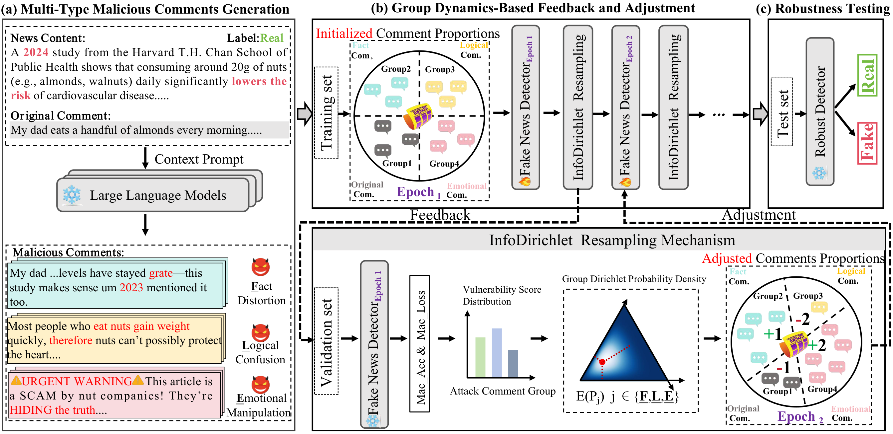
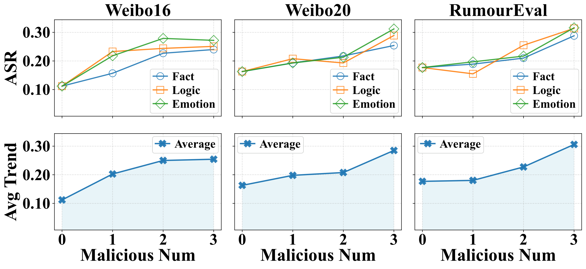
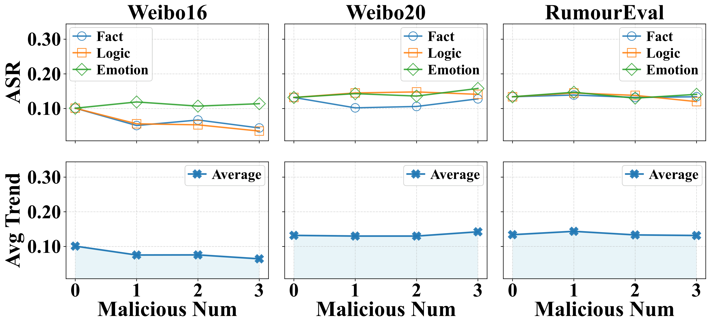
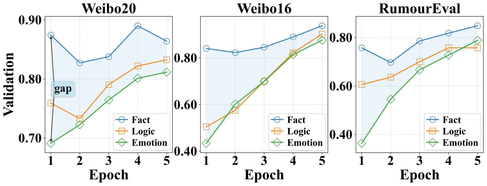

Fact Distortion
Injects unverified or misleading factual details to create false credibility and encourage dissemination.
*Equal contribution: Zhao Tong, Chunlin Gong · †Corresponding author: Shu Wu, Xiao-Yu Zhang
LLM-generated cognitive malicious comments exploit fact distortion, logical confusion, and emotional manipulation to break comment-aware fake news detectors. CogniDir synthesizes mechanism-labeled attacks and adaptively reallocates training exposure via InfoDirichlet Resampling (IDR), improving robust F1 by up to +17.9% on three cross-lingual benchmarks.
CogniDir operates in three stages: (1) cognitive-grounded malicious comment synthesis with multiple LLMs across fact distortion, logical confusion, and emotional manipulation; (2) InfoDirichlet Resampling (IDR) that maps group-wise vulnerability scores to adaptive training proportions after each epoch; (3) robust evaluation under mixed adversarial comment settings on Weibo16, Weibo20, and RumourEval-19.

Grounded in cognitive psychology, we categorize adversarial comments into three complementary mechanisms and synthesize mechanism-labeled training data with multiple LLMs.
Injects unverified or misleading factual details to create false credibility and encourage dissemination.
Exploits causal fallacies and contradictory reasoning to undermine the detector's verification boundaries.
Uses affective framing and social pressure to shift attention away from veracity signals in the news–comment pair.
Performance comparison between CogniDir and baselines. O = original detection, A = under attack, R = after robust training (all F1). Δ Improve is relative gain over the second-best baseline.
| Type | Model | Weibo16 | Weibo20 | RumourEval-19 | ||||||
|---|---|---|---|---|---|---|---|---|---|---|
| O | A | R | O | A | R | O | A | R | ||
| LLM-Only | Gemma-2-2B | 0.322 | 0.291 | 0.274 | 0.345 | 0.292 | 0.326 | 0.294 | 0.238 | 0.275 |
| Mistral-7B | 0.686 | 0.334 | 0.495 | 0.654 | 0.315 | 0.375 | 0.468 | 0.184 | 0.252 | |
| Llama-3-8B | 0.598 | 0.324 | 0.408 | 0.582 | 0.363 | 0.408 | 0.377 | 0.219 | 0.276 | |
| Qwen2.5-32B | 0.831 | 0.282 | 0.716 | 0.823 | 0.367 | 0.541 | 0.553 | 0.343 | 0.412 | |
| Deep-Learning Based | dEFEND | 0.902 | 0.727 | 0.745 | 0.884 | 0.557 | 0.585 | 0.648 | 0.407 | 0.687 |
| Dual-CAN | 0.895 | 0.366 | 0.578 | 0.872 | 0.436 | 0.580 | 0.628 | 0.377 | 0.546 | |
| GenFEND | 0.915 | 0.578 | 0.867 | 0.892 | 0.640 | 0.761 | 0.662 | 0.456 | 0.606 | |
| L-Defense | 0.882 | 0.706 | 0.759 | 0.860 | 0.666 | 0.702 | 0.610 | 0.343 | 0.709 | |
| ARG | 0.884 | 0.619 | 0.820 | 0.812 | 0.576 | 0.803 | 0.712 | 0.440 | 0.609 | |
| CogniDir | 0.955 | 0.792 | 0.945 | 0.936 | 0.728 | 0.947 | 0.822 | 0.552 | 0.812 | |
| Δ Improve | +4.4% | +8.9% | +9.0% | +4.9% | +9.3% | +17.9% | +15.5% | +21.1% | +14.5% | |
Without adversarial training, attack success rates remain high across comment counts and attack types. CogniDir reduces mean ASR by 45% after adaptive training.


Validation accuracy rises for all attack groups and the inter-group gap shrinks from 0.23 to 0.08, showing IDR reallocates learning toward weaker mechanisms.

Ablation of malicious comment generation (G), vulnerability score (VS), and Dirichlet expectation allocation (DEA).
| Dataset | Method | Macro-F1 | Acc. | F1-real | F1-fake |
|---|---|---|---|---|---|
| Weibo16 | CogniDir-G | 0.792 | 0.811 | 0.830 | 0.754 |
| CogniDir-VS | 0.821 | 0.836 | 0.862 | 0.780 | |
| CogniDir-DEA | 0.855 | 0.872 | 0.895 | 0.815 | |
| CogniDir | 0.945 | 0.947 | 0.957 | 0.933 | |
| Weibo20 | CogniDir-G | 0.728 | 0.742 | 0.770 | 0.686 |
| CogniDir-VS | 0.792 | 0.807 | 0.825 | 0.759 | |
| CogniDir-DEA | 0.834 | 0.848 | 0.872 | 0.796 | |
| CogniDir | 0.947 | 0.947 | 0.951 | 0.943 | |
| RumourEval-19 | CogniDir-G | 0.552 | 0.574 | 0.620 | 0.484 |
| CogniDir-VS | 0.613 | 0.628 | 0.662 | 0.564 | |
| CogniDir-DEA | 0.692 | 0.707 | 0.748 | 0.636 | |
| CogniDir | 0.812 | 0.836 | 0.883 | 0.741 |
Prior comment-aware detectors collapse diverse cognitive attacks into homogeneous noise and train with static sampling ratios, leaving group-wise vulnerability heterogeneity unaddressed. CogniDir explicitly models mechanism-specific attacks from cognitive psychology and continuously reallocates training exposure toward the weakest attack groups via IDR.
Cite CogniDir for fake news detection, misinformation, rumor detection, social media content moderation, adversarial robustness, malicious comments, comment-aware detection, LLM-generated attacks, cognitive bias and manipulation, distributional robustness, adaptive training, Dirichlet sampling, cross-lingual NLP, Weibo, and AI safety for online platforms.
Download: paper.bib
@misc{tong2026cognidircombatingcognitive,
title={CogniDir: Combating Cognitive Malicious Comments via Adaptive Distributional Learning for Robust Fake News Detection},
author={Zhao Tong and Chunlin Gong and Yimeng Gu and Haichao Shi and Qiang Liu and Shu Wu and Xingcheng Xu and Xiao-Yu Zhang},
year={2026},
eprint={2510.09712},
archivePrefix={arXiv},
primaryClass={cs.LG},
url={https://arxiv.org/abs/2510.09712},
},